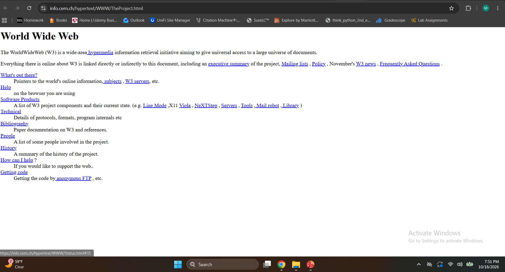

The Beginning of the Web
The World Wide Web was invented by Tim Berners-Lee in 1989 while working at CERN, a European research organization. His goal was to make it easier for researchers to share information across different computer systems.
The first website became available
at CERN in 1991. It explained the
World Wide Web project and how
people could access information
through connected documents.

What Was Web 1.0?
Web 1.0 describes the early period of the World Wide Web, when most websites were primarily static. Visitors could read information, but opportunities to interact with websites were limited.
Characteristics of Web 1.0
- Mostly static HTML pages
- Limited user interaction
- Simple text and images
- Basic navigation using hyperlinks
- Content controlled by website owners
Technologies Behind the Early Web
HTML
Hypertext Markup Language (HTML) provides the structure of web pages. It allows developers to organize text, headings, images, and links.
HTTP
Hypertext Transfer Protocol (HTTP) allows browsers and web servers to communicate and transfer web resources.
Web Browsers
Early browsers allowed people to navigate websites using hyperlinks. Later browsers, including Mosaic and Netscape Navigator, helped make the web more accessible.
Early Web Timeline
| Year | Development |
|---|---|
| 1989 | Tim Berners-Lee proposes the World Wide Web. |
| 1991 | The first website becomes available at CERN. |
| 1993 | The Mosaic browser helps popularize the web. |
| 1994 | The World Wide Web Consortium (W3C) is founded. |
Learn More
Visit CERN to learn more about the history of the World Wide Web.
The Birth of the Web - CERN